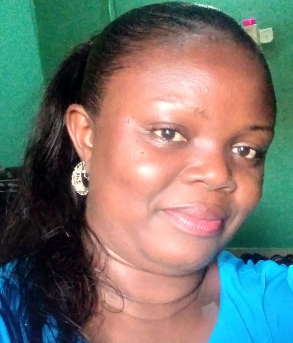

Chibuzo Idia | WDD 130

My name is Chibuzo Idia. I live in Nigeria. I enjoy teaching Physics. I am hopeful that I will get a better paying job after my software degree. I am very happy to be enrolled in this course. I have learnt a lot on HTML. I hope to finish well.Software Engineering requires patience and the need to put your hands to work, compared to teaching Physics to secondary school students, you have to be patient with your self.